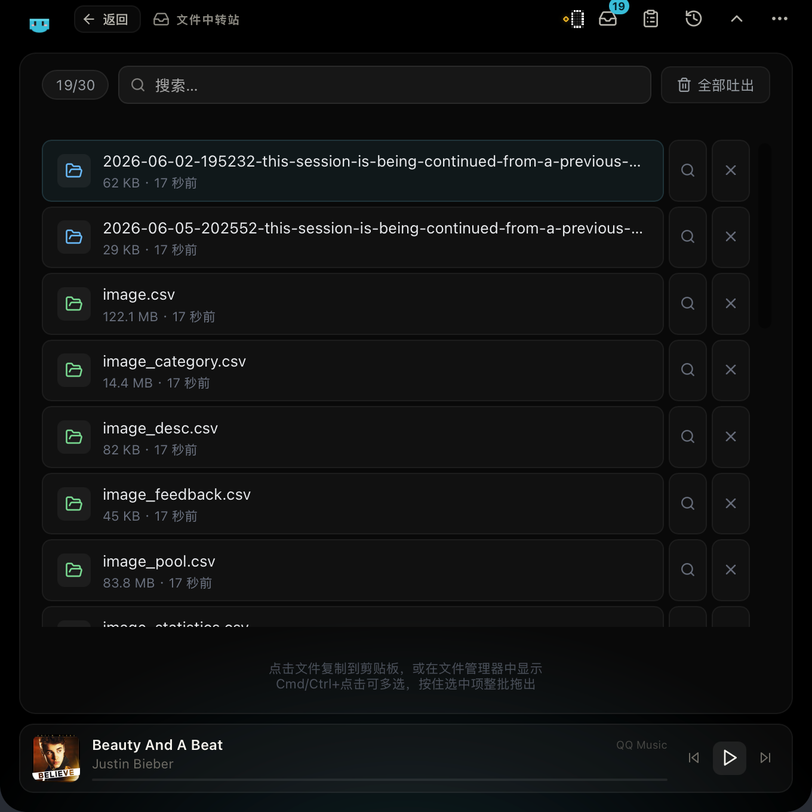
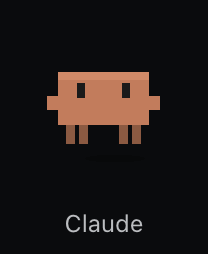
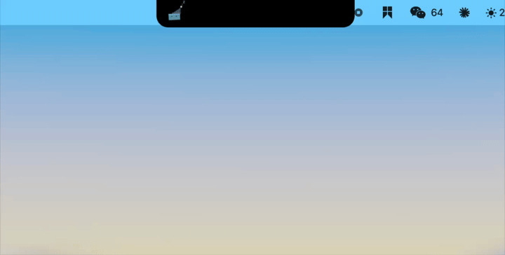

PERMISSION REQUEST
准备运行测试
$ npm test --runDenyApprove Always
Enter 批准 · Delete 拒绝
权限审批、计划确认、后台任务。
让 AI 工作流住进顶栏，让你留在心流里。
v0.1.68 · 为每天与 Coding Agent 协作的你而造
Agent 已准备好，下一步由你决定。
$ npm test --run~/code/my-app1. 统一视觉与布局
2. 优化浮岛交互
3. 检查移动端体验
点击任务，查看执行详情。
决定已送回 Agent，继续你的工作。
点击一个场景，体验浮岛如何回应。演示数据仅存在于网页。
从一个权限请求，到一个完整计划。
浮岛把需要你的时刻，带到你眼前。
$ npm test --runEnter 批准 · Delete 拒绝
在浮岛里回答规划问题、阅读 Markdown 计划，再决定是否开始执行。
追踪子 Agent 的状态、执行详情与完成时间，把协作的每一步串起来。
把重复操作交给规则，把主动权留给你。
常用命令自动放行，风险操作留给你决定。
rm -rf、sudo 等危险命令命中规则也会回落人工审批；审批卡「Always ▾」当场把当前命令存为规则。主动展开或仅通知，用你的节奏处理请求。
一个热键召回，批准与拒绝都不用切窗口。
热力图、Agent 占比与趋势，用量一眼掌握。
每次决定都有记录，搜索、筛选与导出随时可用。
自动检查 Hook 状态，连接问题及时发现。
暂存文件，听听音乐，找回刚复制的内容。
那些顺手的小事，也有一个舒服的位置。
拖入暂存、搜索、多选复制，再拖到需要的地方。

文件中转站：搜索、暂存与拖出文件当前曲目与播放控制常驻手边，歌词随播放进度滚动。
找回刚刚复制的内容，支持搜索与隐私开关。
让当日收入逐秒累积，工作也有小小的成就感。
登录即就绪，让浮岛自然融入每天的工作。
在应用内安装对应 Hook，即可接入。
每个 Agent 的支持能力，都清楚写在这里。

Settings → Agent hooks → Install。支持权限审批、Plan 模式与 subagent 追踪；Desktop 需选 Ask permissions，安装后完全退出并重启。
Settings → Agent hooks → Install Codex。支持 CLI / Desktop 会话识别、权限审批、subagent 事件与 transcript 详情；安装后在 /hooks 信任 Atoll hook。
Settings → Agent hooks → Install Cursor。通过 observer hooks 追踪 Agent / Ask 会话、subagent 与 Token；Shell 权限仍由 Cursor 自带 UI 处理。
Settings → Agent hooks → Install ZCode。支持权限审批、会话与 Token 用量统计（读取 rollout JSONL，含子代理归集）。
Settings → Agent hooks → Install Gemini。BeforeTool 阻断式审批，仅拦有副作用的工具；安装后在 Gemini 中 /hooks 信任 Atoll hook。
Settings → Agent hooks → Install OpenCode。OpenCode 没有 hooks 配置文件——Atoll 在其插件目录部署进程内桥接插件；Atoll 不在线时 OpenCode 自带确认自动兜底。

首次安装 Hook 的操作演示Agent、Hook 与浮岛通过本机桥接通信。
会话内容与审批数据留在本地。
127.0.0.1:47777在终端中运行以下命令，自动下载并安装最新版 Atoll。
curl -fsSL https://raw.githubusercontent.com/sheepbooy/Atoll/main/scripts/install.sh | bash
brew tap sheepbooy/tap && brew install --cask --no-quarantine atoll
应用尚未公证。首次启动若被拦截，在 Applications 中右键「打开」一次即可。也可从 Releases 下载 DMG 手动安装。
在 cmd、PowerShell 或 Windows 终端中运行：
powershell -NoProfile -ExecutionPolicy Bypass -Command "irm https://raw.githubusercontent.com/sheepbooy/Atoll/main/scripts/install.ps1 | iex"
首次运行若被 SmartScreen 拦截，选择「更多信息」→「仍要运行」。Hook 安装优先使用本机 Node.js，系统没有 Node 时自动回退应用内置运行时。也可从 Releases 下载 MSI 手动安装。
忙碌时告诉你状态，空闲时过自己的小日子。
钓鱼、观星、喝咖啡，总有一点小惊喜。
启动检查新版本，一键下载安装并重启；遵循系统代理设置。
补齐生命周期事件，刷新过期 shim；没有 Node.js 时回退内置运行时。
支持多显示器驻留，刘海屏浮岛对称展开，显示参数变化自动重排。
免费 · 开源 · 为本地 AI 工作流而造